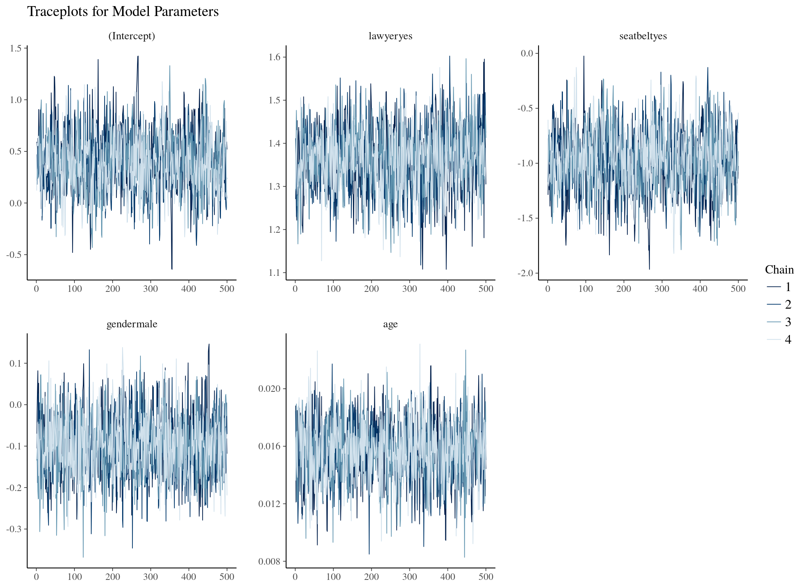
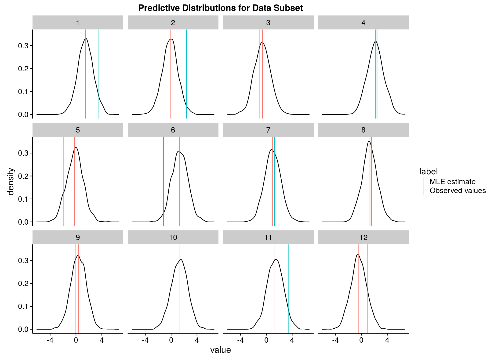

An Introduction to Bayesian Analysis and Bayesian Regression in R
Mick Cooney
Bayesian
Statistics
in
5 Minutes
Which is impossible
So let's rather try to...
Learn About
Bayes Rule
in
5 Minutes
So what is Bayes Rule?
$$P(A \mid B) = \frac{P(B \mid A) \, P(A)}{P(B)}$$
How do we use this?
You use Bayes Rule all the time
You just don't know it
Bayes Rule
shows how your beliefs change
when you get new information
Let's start with something familiar
Tossing a coin
Let's toss the coin a few times
After each toss
Tell me if the coin is fair
At outset it's reasonable to
assume the coin is fair
This is your initial belief
First toss: H
Fair? Yes
Second toss: H
Fair? Yes
Third toss: H
Fair? Yes
Fourth toss: H
Fair? Yes doubts set in
Fifth toss: H
Fair? Possibly
Sixth - Tenth toss: H
Fair? Probably not
Eleventh - Twentieth toss: H
Fair: Defintely not
Chances of this are:
1 in 1,048,576
You have just intuitively applied Bayes Rule without realising it
As you got more information
you altered your belief
that the coin is fair
Bayes rule allows you quantify this qualitative process
Now Let's look at Bayes rule again
$$P(A \mid B) = \frac{P(B \mid A) \, P(A)}{P(B)}$$
We can simplify this
$$P(A \mid B) \propto P(B \mid A) \, P(A)$$
$$P(A)$$
is the prior distribution
and represents our initial belief
$$P(B \mid A)$$
is the likelihood model
and updates as the data arrives
$$P(A \mid B)$$
is the posterior distribution
our updated beliefs for $A$
A picture is worth a thousand words
Using simple building blocks
powerful models can be built
Why Bayesian?
Interpretability
Natural interpretation of output
Credibility region vs Confidence interval
Sparse Data Problems
Risk pricing
Muti-touch attribution
Account segmentation
The Bayesian Approach
Posterior Distribution
\[p(\theta \, | D) = \frac{\int p(D \, | \, \theta) \, p(\theta)}{\int p(D)}\]
\[\begin{eqnarray*}p(\theta) &=& \text{prior distribution of } \theta \\ p(\theta \, | D) &=& \text{posterior distribution of } \theta \text{ given } D\end{eqnarray*}\]
\[p(\theta \, | D) \propto \int p(D \, | \, \theta) \, p(\theta)\]
How do we calculate this integral?
Stan
MCMC via HMC
Probabilistic Programming Language
C++ backend
Excellent online community
Why bother?
Captures uncertainty
Easy to iterate and improve
Allows generative modelling
Hierarchical modelling for sparse data
Pitfalls
Learning ‘cliff’
Requires aspects of physics, computation, statistics
Can seem overwhelming
Start with simple linear model
Linear Models
Getting Started
Ordinary Least Squares (OLS)
Input variables \(X\), parameters \(\beta\)
\[\begin{eqnarray*}y &=& \beta X + \epsilon, \\\epsilon &\sim& \mathcal{N}(0, \sigma)\end{eqnarray*}\]
Constant variance \(\sigma\)
Rethink linear models in Bayesian language
Need probability model
Basic Assumptions
Data distributed as Normal
Mean for each point is linear function of \(X\), \(\beta X\)
\[y \sim \mathcal{N}(\beta X, \sigma)\]
Simple Claims Model
log_loss lawyer gender seatbelt age
1 3.553632 yes male yes 50
2 2.388029 no female yes 28
3 -1.108663 no male yes 5
4 2.401253 yes male no 32
5 -1.980502 no male yes 30
6 -1.174414 yes female yes 35
7 1.263562 yes male yes 19
\[\text{log_loss} \sim \text{lawyer} + \text{seatbelt} + \text{gender} + \text{age}\]
‘Formula notation’
MLE Model (in R)
model_lm <- lm(log_loss ~ lawyer + seatbelt + gender + age
,data = modeldata_tbl)

Bayesian Regression
Set up model in Stan
Effort involved
rstanarm Package
Pre-built models
Linear models, GLMs, ANOVA, etc.
Built for ease of use
rstanarm Version
model_stanlm <- stan_lm(log_loss ~ lawyer + seatbelt + gender + age
,prior = R2(location = 0.8)
,data = modeldata_tbl)


Further Reading
Stan Documentation/Vignettes/Case Studies, Stan Core Team et al.
http://www.mc-stan.org
Data Analysis Using Regression and Multilevel/Hierarchical Models, Gelman and Hill
http://www.stat.columbia.edu/~gelman/arm/
Statistical Rethinking, McElreath
http://xcelab.net/rm/statistical-rethinking/
Doing Bayesian Data Analysis, Kruschke
https://sites.google.com/site/doingbayesiandataanalysis/